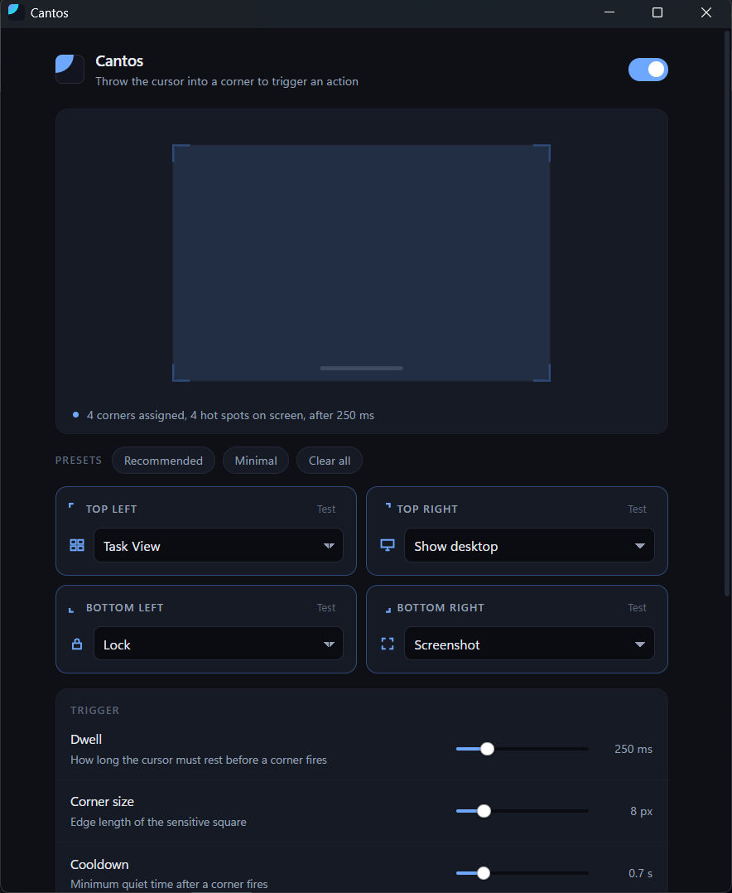

Throw the cursor into a corner of the screen and something happens. Task View, show desktop, lock, a screenshot, or any program you like.
A corner does not fire the instant you touch it. The cursor has to rest there for a moment, which is the difference between a hot corner and a booby trap. Overshoot toward a window's Close button and nothing happens, because nothing should.
One executable, under a megabyte, sitting in the tray on about 2 MB of memory. No installer bloat, no background service, no account.
Highlights
- Twenty-one actionsTask View, show desktop, virtual desktops, Start, Search, Quick Settings, clipboard history, screenshot, lock, screensaver, display off, and more.
- Custom commandsPoint a corner at any program, script, document, or URL, with arguments.
- Tunable triggerDwell, cooldown, and corner size, so it fires when you mean it and not when you don't.
- Hold a keyOptionally require Ctrl, Alt, Shift, or Win before a corner will fire at all.
- Snap-awareDragging a window into a corner stays a Windows Snap. No corner fires while a mouse button is down.
- Stays out of gamesSuppressed over anything fullscreen. An ordinary maximised window still counts as ordinary.
- Multi-monitorThe outer corners of the whole desktop, every corner of every screen, or the primary display only.
Privacy
Cantos makes no network requests. There is no telemetry, no update check, no account, and nothing is ever uploaded. The dependency tree contains no HTTP client at all, and the settings window is a local document that loads nothing from the internet.
Your settings are a single JSON file in
%APPDATA%\Cantos, which you are welcome to read, edit, or
delete.
Tips
- The bottom-left corner is the Start button and the bottom-right is Aero Peek, so both start out doing nothing. Assign them only if you do not use those.
- Edit
config.jsonby hand and the change applies within a second. No restart. - Every decision that can make a corner do nothing is written to the log, reachable from the tray menu.
- Set CANTOS_LOG=debug before launching for per-transition detail.
Frequently asked questions
Windows says it protected my PC
The download is not code-signed, so SmartScreen warns until a
release accumulates reputation. Click More info, then Run
anyway. Every release publishes a SHA256SUMS.txt if
you would like to verify the file first.
A corner does nothing while a certain app is focused
Windows refuses synthetic keystrokes aimed at a window running as administrator. That is a security boundary, not a bug. Actions that do not synthesise input, such as Lock, Screensaver, Turn display off, and Custom command, keep working regardless.
The settings window will not open
It needs the Microsoft WebView2 runtime. Windows 11 ships it, and on Windows 10 it arrives with Edge. If it is missing, Cantos says so and offers the download page. Your hot corners keep working either way, and you can still edit the settings file by hand.
Does it need administrator rights?
No. The app runs as you. The installer asks for elevation only because it writes to Program Files. There is also a portable build that installs nothing at all.
Will it fire while I am gaming?
No. Fullscreen suppression is on by default and checks both the shell notification state and the foreground window's geometry, which covers borderless-windowed games and video players.
Does it work on multiple monitors?
Yes, in three modes. On L-shaped arrangements an outer corner that does not sit on a physical display is dropped rather than published as a corner that could never fire.
Is it really free?
Yes. MIT licensed, and the source is on GitHub.